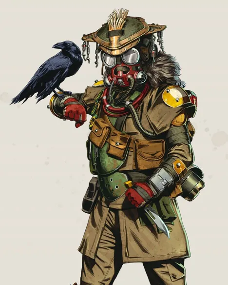
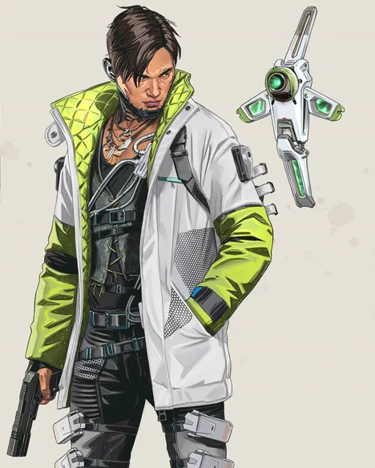
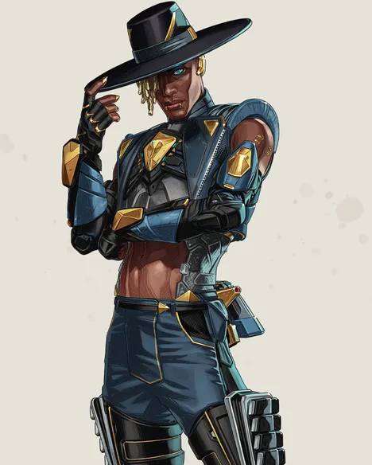
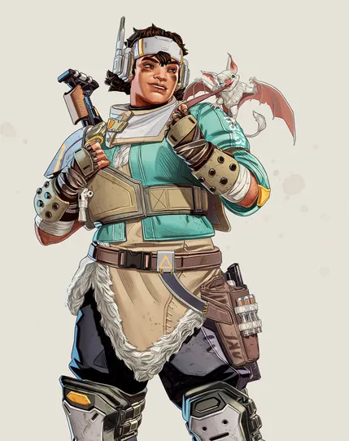

블러드하운드(Bloodhound)
- 패시브-추적기(Tracker)
- 적이 행방의 단서를 남깁니다.
흰색 까마귀가 나타나 전장으로 안내하고 능력을 충전해 줄지도 모릅니다.
- 전술-신의 눈(Eye of the Allfather)
- 앞쪽에 있는 모든 구조물에서 잠시 동안 적, 트랩, 단서를 드러냅니다.
- 얼티밋 스킬-사냥의 야수(Beast of the Hunt)
- 궁극의 사냥꾼으로 변신합니다. 흰색 까마귀를 이용하고 감각을 강화하여 흔적을 확인하고 빠르게 움직입니다.
녹다운 시 지속시간이 연장됩니다.

크립토(Crypto)
- 패시브-뉴로링크(Neural Link)
- 크립토의 드론으로 30미터 내에서 탐지한 표적은 크립토와 분대원이 볼 수 있습니다.
- 전술-감시 드론(Surveillance Drone)
- 조사 비컨, 부활 비컨, 아군 배너 카드와 원격으로 상호작용할 수 있는 비행 카메라 드론을 배치합니다.
- 얼티밋 스킬-드론 EMP (Drone EMP)
- 드론의 EMP를 터뜨립니다.
폭발은 실드에 50 대미지를 입히며, 플레이어의 이동 속도를 낮추고 함정을 파괴합니다.

시어(Seer)
- 패시브-하트 시커 (Heartseeker)
- 정조준 시 근처 50m 이내에 있는 적의 심장 박동을 듣고 시각화합니다.
- 전술-관심 집중 (Focus of Attention)
- 초소형 드론을 소환해 지연 폭발을 일으켜, 벽을 뚫고 적을 침묵시키고 적 위치를 드러냅니다.
- 얼티밋 스킬-전시 (Exhibit)
- 초소형 드론으로 이뤄진 구체를 생성해, 그 안에서 빠르게 움직이거나 무기를 발사하는 적의 위치를 알 수 있습니다.

밴티지(Vantage)
- 패시브-정찰자의 렌즈 (Spotter's Lens)
- 조준하여 접안경(비무장 또는 중장거리 조준경)으로 정찰하고 탄환 이동 표시기를 사용해 사격 위치를 확인합니다.
- 전술-에코 재배치 (Echo Relocation)
- 날개 달린 동료 에코를 배치한 다음 그를 향해 발사합니다. 발사하려면 에코가 시야 안에 있어야 합니다.
- 얼티밋 스킬-스나이퍼의 표시 (Sniper's Mark)
- 커스텀 스나이퍼 라이플로 자신과 팀원에게 대미지 보너스를 적용하는 적 표적 표시를 할 수 있습니다.
